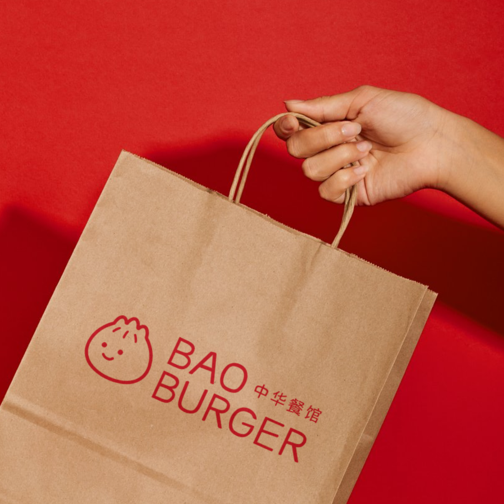
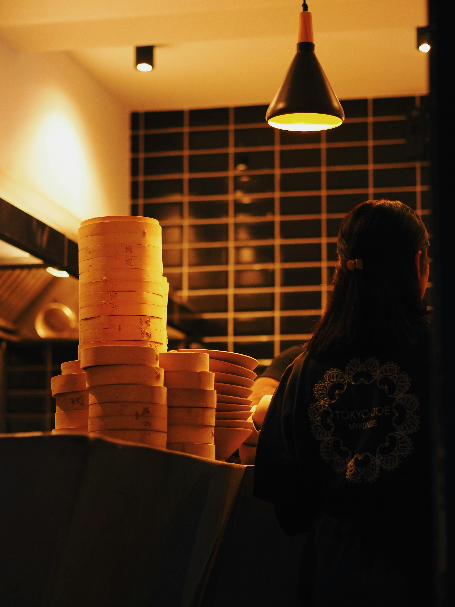
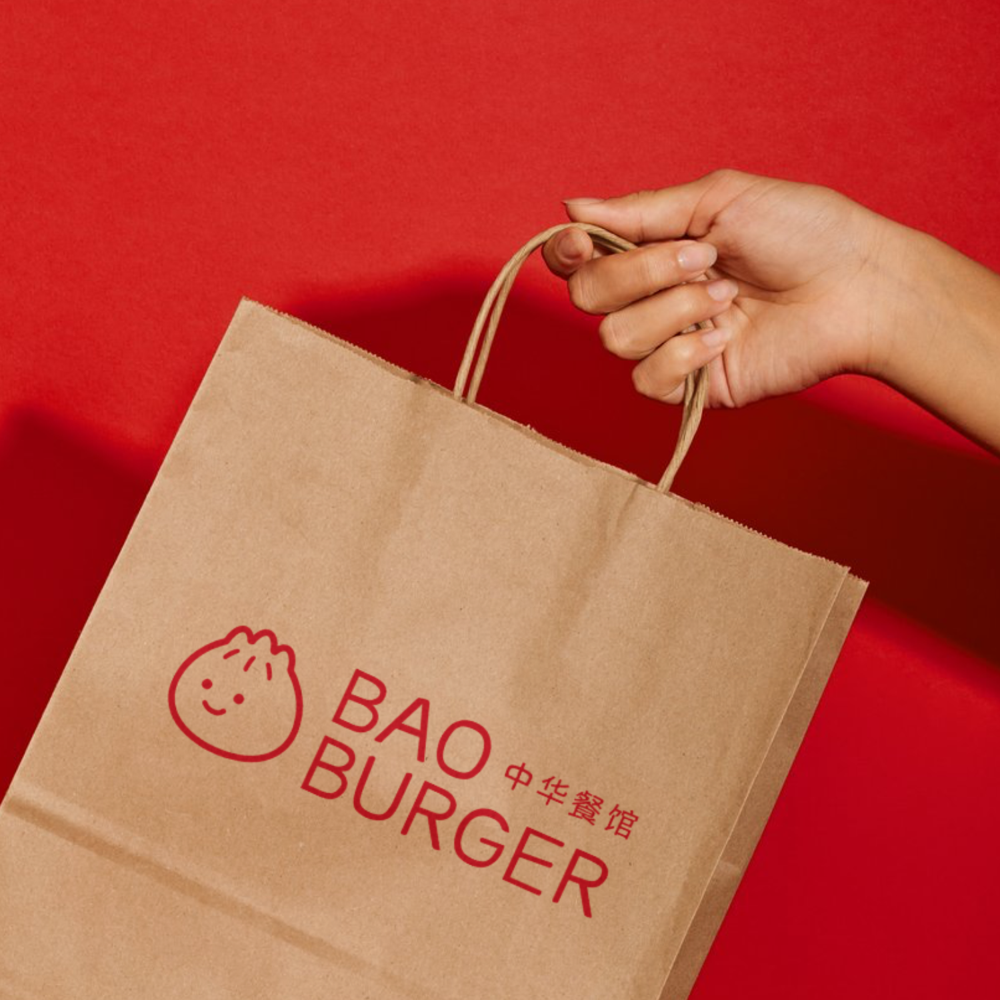
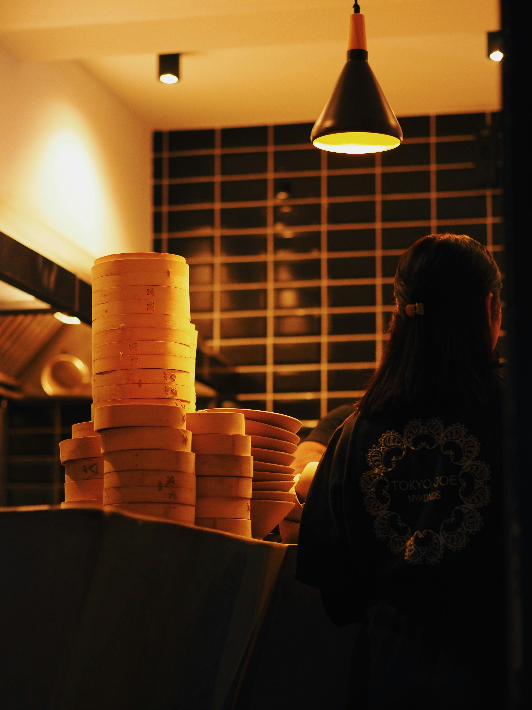

PROBLÉMATIQUE
À Bordeaux, Bao Burger Ramen, un petit restaurant de street-food chinoise tenu par Xin-way Wang, chef originaire de Chine, était victime de son succès croissant. Son espace limité ne pouvait plus accueillir toute sa clientèle, et son identité visuelle ne correspondait plus à son approche authentique de la cuisine chinoise maison et abordable.
SOLUTION
Une refonte visuelle mettant l'accent sur la chaleur et la convivialité de l'expérience culinaire de Bao Burger, à travers l'utilisation de couleurs plus chaudes et la création d'une mascotte pour renforcer l'identité accueillante du restaurant.
 


